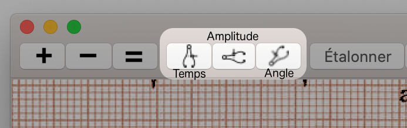
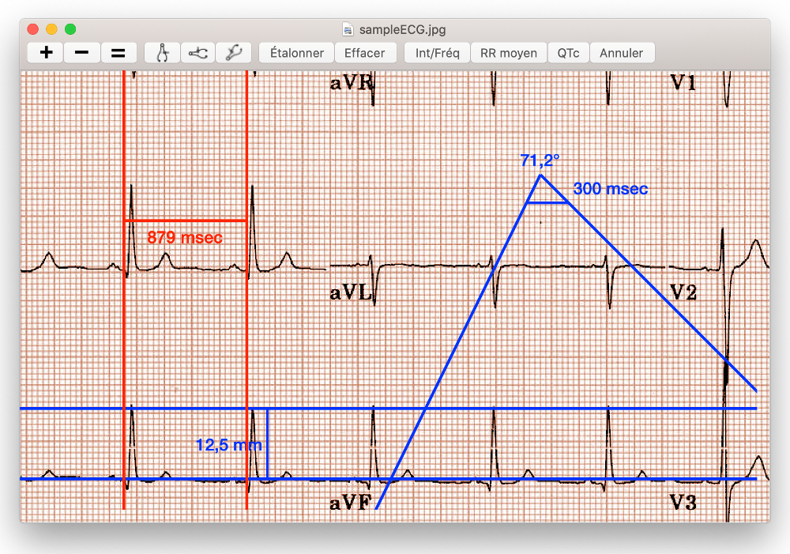
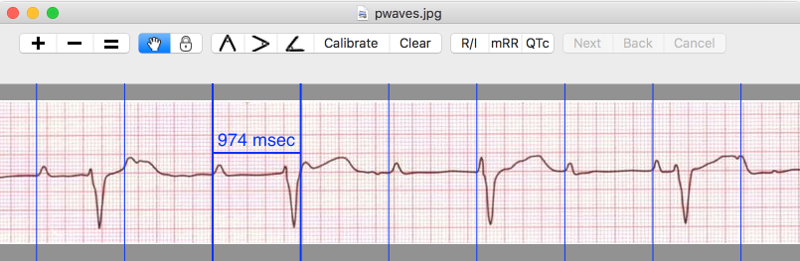

Calipers
Calipers
Addition et suppression de compas
Il y a trois types de compas. Les compas peuvent être horizontaux pour les mesures de temps, verticaux pour les mesures d'amplitude, ou angulaires pour les mesures d'angles en degrés. Les compas de temps ressemblent à la lettre H, les compas d'amplitude à la lettre H couchée sur le côté, et les compas d'angle au début à la lettre V inversée.
Addition de compas
Cliquer sur les icônes de compas sur la barre d’outils Compas, ou utiliser le menu Compas pour ajouter de nouveaux compas.

Figure 1: Barre d’outil Compas pour ajouter des compas
Sélection d'un compas
Quand il y a plus d'un compas sur l'écran, il faut qu'un compas soit choisi comme le compas actif pour l'étalonner ou pour faire les calculs. Par défaut un compas non choisi est bleu et un compas choisi est rouge. Vous pouvez changer les couleurs en utilisant les préférences. Il est aussi possible de changer les couleurs de compas individuels. Un clic de souris ou une frappe sur le touchpad sur un compas non choisi le choisira. Un deuxième clic encore (mais pas trop vite, parce que un double clic supprimera le compas) le désélectionnera. Comme il peut y avoir un seul compas choisi à la fois, la sélection d'un compas va désélectionner un autre compas qui est sélectionné. Parfois un compas sera choisi automatiquement, par exemple pour faire de l'étalonnage, si aucun compas n'est déjà choisi. Si vous voulez choisir un autre compas, il faut simplement le taper.

Figure 2: Trois types de compas (de temps, d’amplitude, et d’angle). Le compas rouge est choisi.
Suppression de compas
Un double clic avec la souris ou une double frappe du trackpad sur un compas le supprimera. Un compas choisi peut être supprimé par la touche Suppr ou par la commande de menu Compas | Supprimer le compas choisi. Tous les compas peuvent être supprimés en même temps en utilisant Maj + Suppr de votre clavier ou la commande de menu Compas | Supprimer tous les compas. Noter que l’étalonnage continue même si tous les compas sont supprimés. Des compas nouvellement ajoutés utilisent l’étalonnage précédent.
Changer les couleurs de compas
Au début les couleurs de compas sont fixés par les préférences et ces couleurs sont appliquées à tous les nouveaux compas ajoutés. Cependant, après qu'un compas est ajouté, sa couleur peut être changée. Les changements de couleur persistent jusqu'à ce que les compas soient supprimés ou l'application soit arrêtée. En utilisant un clic droit de la souris ou une frappe avec deux droigts du trackpad sur un compas, le menu secondaire apparaîtra. Choisir Couleur de compas. Choisir une couleur dans la boîte de dialogue et le compas prendra cette couleur-là. Le changement affectera seulement le compas choisi. Vous pouvez changer la couleur par défaut de nouveaux compas en utilisant le menu de Préférences.
Les compas marchants
En utilisant un clic droit de la souris ou une frappe avec deux droigts du trackpad sur un compas, le menu secondaire apparaîtra. Choisir Compas marchant pour changer un compas de temps à un compas marchant. Des lignes verticales apparaîtront égales à la largeur du compas à chaque côté. C’est utile pour l’évaluation les rythmes irréguliers ou réguliers, ou pour détecter les ondes P marchantes pendant une tachycardie ou un bloc cardiaque. Choisir Compas marchant encore pour changer à un compas normal.

Figure 3: Un compas marchant
Déplacement des compas
Mouvement
Les compas peuvent être déplacés sans tenir compte de l’état de curseur. Utiliser le bouton gauche de souris ou appuyer et maintenir le trackpad avec votre droigt sur la barre transversale d’un compas de temps ou d’amplitude. Pour déplacer des compas d’angle, choisir le sommet de l’angle où les deux lignes se joignent. Bouger la souris ou votre droigt pour déplacer le compas comme une unité.
Étendre ou réduire un compas
Si le curseur est placé sur les barres gauches ou droites d’un compas de temps (ou sur les barres supérieures ou inférieures d’un compas d’amplitude) vous pouvez déplacer ces barres seules et étendre ou réduire le compas. Noter que ce n’est pas possible de déplacer les deux barres au même temps. Quand vous déplacez une barre d’un compas, l’autre reste fixée. On peut déplacer les barres d’un compas d’angle de la meme façon. Avec la combinaison de mouvements c’est possible de placer un compas partout sur un ECG.
Petits mouvements
Parfois vous aimeriez raffiner la position d'un compas, ou vous trouvez qu'il est trop difficile de le positionner exactement en glissant ses composants avec votre doigt ou avec la souris. Vous pouvez faire ces petits mouvements avec les touches flèches du clavier. En utilisant un clic droit de la souris ou une frappe avec deux droigts du trackpad sur un compas, le menu secondaire apparaîtra. Choisir Régler la position du compas. Un message apparaîtra pour montrer quelque composant du compas a été choisi (barre transversale, barre latérale ou, en cas d'un compas d'angle, peut-être le sommet). Des touches flèches à gauche, à droite, montantes ou descendantes déplaceront le composant choisi ou tout le compas en utilisant des petits mouvements. Appuyer la touche Échap pour quitter les petits mouvements.